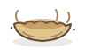

Two mock journal pages on the proposed paper. Left: today's light tokens
with the new parchment grain (web/assets/theme/paper.svg).
Right: the proposed bright dark paper (paper-dark.svg) — still
paper, warmer than grey, and no longer brown. Both textures tile seamlessly
at 512×512 and carry their base colour as the --parchment
token, so the app stays in charge of theming. The nest
(web/assets/rambo/nest.svg) is redrawn to match: a shallow
pressed-in paper dish. Rambo himself is unchanged in this PR.
Light — parchment #f2e8cf (current token)

Dark — proposed bright paper #48443a (not brown)
--parchment #48443a
sheet --wheat #524d40
pressed --ecru #332f26
ink --ink #efe3c8
accent --accent #d9a45c
Ink on the proposed page: 7.6:1 contrast. Rambo's petrol body
(#64bbc4) on it: 4.4:1, above the 3:1 shape floor. The dark
texture's grain runs slightly stronger than light, as dark paper shows its
fibre more. Old dark page for comparison: #241c11.
Files in this concept: web/assets/theme/paper.svg,
web/assets/theme/paper-dark.svg,
web/assets/rambo/nest.svg, this preview. Nothing in
web/src or web/theme.css is touched — wiring and
token changes come after review.